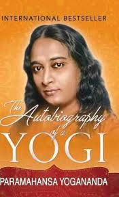

Bag Price at Rs 599

Laptop Price at Rs 66000

Gadget Price Price At Starting 99
Book Price at Rs 199
A paragraph about shopping can describe a shopping experience, the importance of shopping, or the rise of online shopping. Shopping experience A paragraph about a shopping experience can describe the atmosphere of a store, the items you bought, and the time spent with friends and family. For example, you could describe a day spent shopping at a mall, including the clothes you bought, the accessories you admired, and the time you spent with friends. Importance of shopping A paragraph about the importance of shopping can explain how shopping is essential for obtaining basic necessities like food, clothing, and shelter. It can also explain how shopping can be a fun activity to do with friends and family. Online shopping A paragraph about online shopping can describe how online shopping is a convenient way to buy goods and services, and the advantages and disadvantages of online shopping. For example, you could describe how online shopping allows consumers to browse an online store, select products, and add them to a virtual shopping cart.